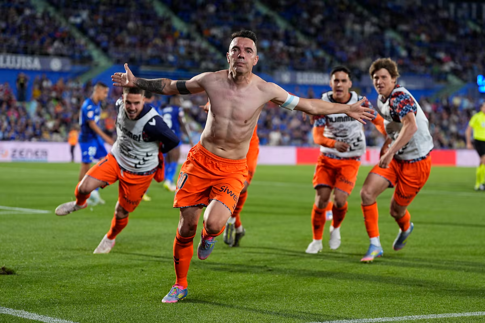

Plantilla
Xogadores
Actualmente a plantilla do celta conta con 28 xogadores, e 12 membros do "Staff" ou Corpo Técnico, esta plantilla ten actualmente 16 canteráns, é dicir, xente que pasou polas inferiores do celta, esta plantilla logrou na anterior temporada ilusionar a todo o celtismo levando, tras varias temporadas sufrindo pola permanencia, ao equipo a competición europea despois de 8 anos de puro sufrimento cos da casa e loitando fronte a grandes clubes nun ano caracterizado pola cercanía do clube co celtismo, e máis preto das súas raíces que nunca.
Este "barco" ten a dous, sen menospreciar ao resto de compañeiros/as, capitáns moi imporantes, Iago Aspas e Claudio Giráldez, ámbolos dous son quenes fixeron que todo o celtismo se volcase co equipo e grazas a ilusión que iso trouxo puidose loitar por moito máis ca permanencia coma os outros anos, Iago xa ten 38 anos e xoga coma se tívese 28 sempre estando un escalón por enriba dos demais, Claudio pola súa parte ten 37 anos pero ven do filial despois dunha temporada na que o equipo case descende e salvando ao celta, pero non de calquer forma, senón que subiu a moitísimos rapaces da canteira, os cales según o previo entrenador non tiñan nivel, aínda así Claudio decidiu confiar en eles o que levou ao equipo a estar como están actualmente demostrando que o previo entrenador equivocouse totalmente.
